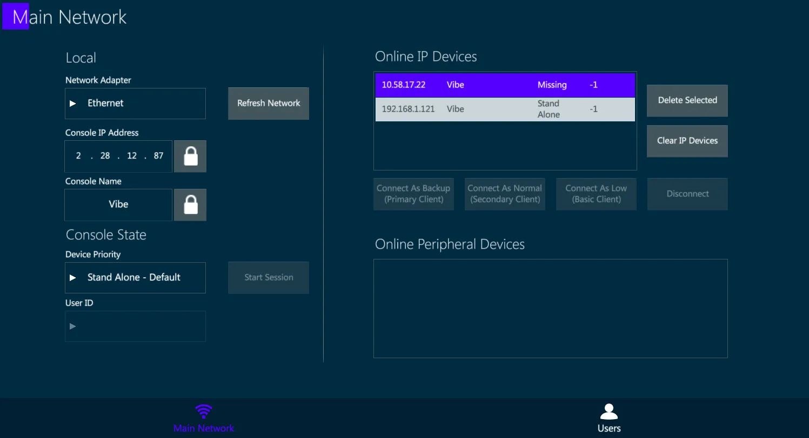
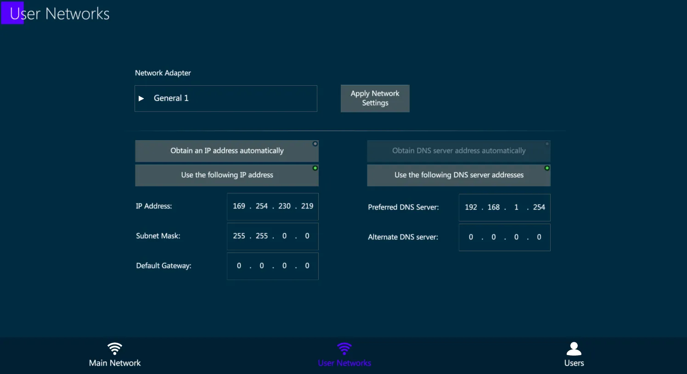
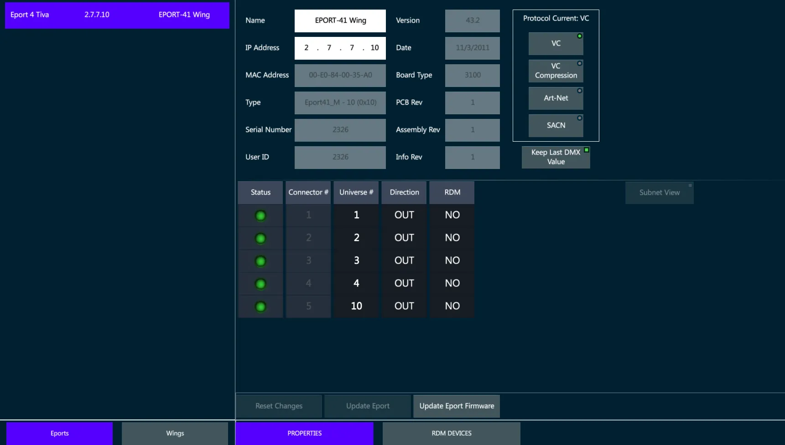
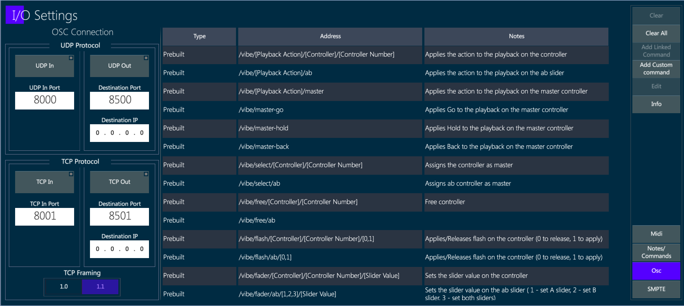
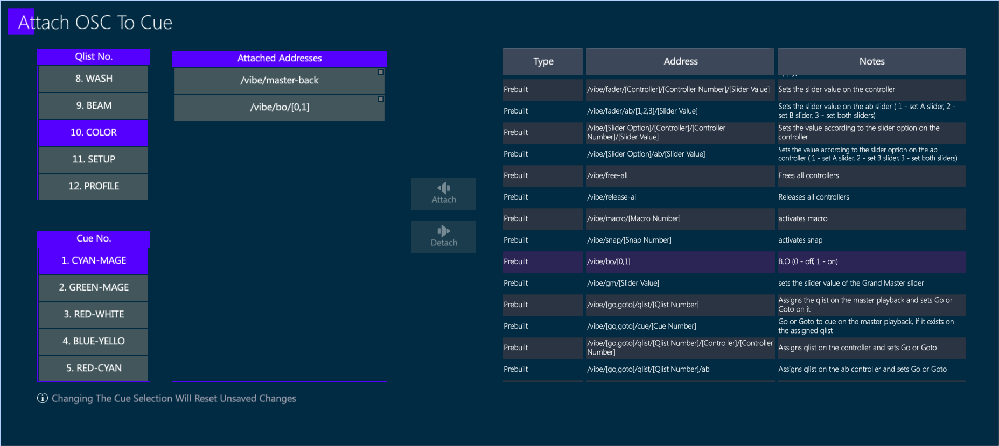
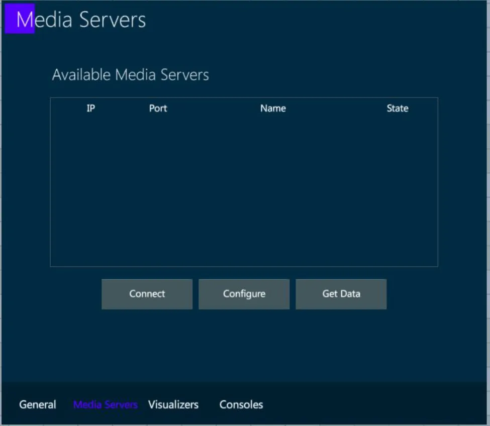

Chapter 17 Network
👉 Configure the Vibe system’s Network, manage input and output protocols, setup the connected external devices.
This chapter deals with configuring DMX over Ethernet and other frequently used protocols such as RDM, OSC and CITP.
Chapter index:
17.1 Console Network
Vibe has different user accessible Ethernet networks:
- Data Network - Accessible via the two EtherCON connectors on the rear panel.
◾ Used for Art-Net, sACN, Compulite VC protocol nodes and Master/Slave backup.
- General Networks - Accessible via the two RJ45 connectors on the rear panel.
◾ Used for Network storage of show files and remote diagnostics.
Each network device must have its own unique static IP address in the form of four triplets xxx.xxx.xxx.xxx, to identify it on the network. In Vibe, this can be set in the Network Settings popup.
It is not necessary to have three digits in each segment of the IP but there must be at least one digit in each segment. Vibe ships with a default Subnet Mask of 255.0.0.0 which means that it is only important that the first triplets of the IP (the start address) must match on all devices in the network. Devices on the same network must not have identical IP addresses.
Common Start IP addresses:
2.x.x.x - Default for Art-Net networks.
10.x.x.x - Default for most ETC networks and alternate for Art-Net network.
192.x.x.x -Default for most MA consoles.
Subnet Mask - Identifies the network itself and in conjunction with the IP address can be used to properly route network devices.
255.0.0.0. - Compulite Default. Only the first triplet must match.
255.255.0.0 - Common in configurations with different systems on the same network. The first and second triplets must match.
255.255.255.0 - Common in configurations with many different systems on the same network. The first, second and third triplets must match. Not suggested for networks having more Compulite consoles connected.
Compulite uses the third triplet as a console identifier in some of the products.
The Vibe can be used in networks using a DHCP server but cannot act as a DHCP server.
Switches:
Vibe has two internal switches, single direct device to device connections are possible without a cross cable.
When more than one device is connected to the Vibe a good quality gigabit switch should be used.
Many systems have gone down due to bad Ethernet cabling and cheap switches. It is recommended that EtherCON connectors are used where possible in conjunction with professional grade switches designed for lighting and audio applications..
17.1.1 Network Settings
Vibe Consoles have 4 different networks:
the Main Network is referred to the Data ports, that are in parallel under the same network board.
the General Networks are referred to the General_1 and General_2 ports, that are independently addressable.
the Internal Network has no external ports, it is used for internal connection between the Vibe components. The User should avoid editing this network’s settings as it may compromise the console functioning.
Vibe PC has only one network configuration tab:
- the Main Network, referred to the system’s network port used as Data output.
Open the {NETWORK SETTINGS} from Vibe Menu > Settings or tap the Network Settings button - The Network popup will open.
17.1.2 Main Network
The Main Network Tab shows the configuration of the network used for data transmission.

Local:
Option to set the local information of the console such as IP and name.
Unlock the boxes to edit the fields.
Console State:
There are 2 possible individual states:
Stand Alone (Default) – Console is not in a session but networking for outputs, remotes and external connections are active.
Local (Offline) – Same as Stand Alone but disables the DMX over Ethernet.
User ID:
- Not implemented yet..
Start Session:
- The console becomes a Master, meaning it’s hosting a session where Backup consoles can be connected.
Online IP Devices:
- Displays all Valid IP based devices active on the network.
Delete Selected:
- Remove the selected devices from the list.
Clear IP Devices:
- Clear the whole IP device list.
Connect As … / Disconnect:
- Related to starting or ending a session with a master console.
17.1.3 User Networks
On the Vibe consoles, the User Networks Tab shows the configuration of the networks used for additional operations.

General Network IP addresses, both regarding General Network 1 and General Network 2, can be configured in the User Networks tab:
select the Network Adapter,
fill the IP Address and DNS fields as desired,
apply the network settings with the dedicated key.
General Networks may be used for specific operations that require special network configurations, that may be very different, or even incompatible, with the Data network settings.
Some examples of General Network purposes are:
connection to remote external servers for files backup and management,
connection to web services such as TeamViewer to get remote support,
communication with third party devices to exchange OSC commands.
👉 General Networks are not intended to be used for Data output or to establish multiuser connection between Vibe systems and accessories. Please use the Main Network for these common lighting control operations.
17.2 Compulite Devices
Compulite manufactures some additional devices that can be connected to the Vibe system and configured directly via the Vibe software.
These devices include:
Compulite Vibe Wings
Compulite ePort Nodes.
The External Devices View shows all the ePort nodes and the Wings connected to the network, permitting remote management and configuration of the settings.
Vibe actively scans the network to find other compatible Compulite devices. Once recognized by the Vibe system, all the devices found in the network are automatically listed in the view’s tabs.
By selecting a Compulite device, its current options will appear in the External Devices view, according to the amount of ports available (ePorts) or controllers types on the panel (Wings).
The Vibe may be used to configure and update Compulite Device’s settings as well as to perform firmware updates.
This view also permits to manage other brands devices that are compliant with the RDM protocol.
17.2.1 Vibe Wings
Any Vibe Wing, as well as most of the Vector Wings, can be connected and configured directly from Vibe, through the External Devices view.
Supported Vibe and Vector Wings that are automatically found by the Vibe while scanning the network are listed in the Wings tab of the External Devices view.

The Wings tab inside the External Devices view allows to rename the wings and to enable or disable parts of the panel, such as the Grand Master, the Editor, the Controllers.
Unavailable parts, such as the Editor on a Playback Wing, will be grayed out.
Vibe Wings have the same controller types of the console, including Sliders, Qkeys and Auxkeys.
The Wings’ Controllers may be configured from the External Devices view by assigning the starting number for each controller type, as well as ordering the numbering direction from right to left or from left to right.
👉 When a Wing is used with a VibePC, it may be good to have its controllers starting from 1, but when it is used as an expansion, its controllers may be starting from 11 or from 16 (depending on the console model) to obtain additional physical controllers that are not on the console panel.
The Wing’s IP address is not assignable, as it is automatically set by the console once the wing is connected and linked, with a logic that adds +10 to the last number of the console’s IP or of the last Wing connected to the system.
External Wings that are compatible with the Vibe software, such as Vibe PC Wing and Vector PC Wing, will keep the settings configured in the External Devices view once they are reconnected to the system, unless they have been connected to other Compulite systems in between.
Configure the Wing
Make sure that the Vibe IP and the Wing IP are in the same range.
Write a text in the Name field to rename the Wing.
Write the First Slider, Qkey and Auxkey number in the relative field.
Set the Controllers’ numbering direction.
Set the panel part to be Enabled or Disabled (if available).
Tap {Update Wing} to apply the changes or {Reset Changes} to discard.
Update Firmware
Before updating the device’s Firmware, make sure the update file is the correct one for the Wing’s version. Compulite support may be contacted to check that.
Select the Wing from the list.
Tap {Update Firmware}. The file popup will open.
Select the update file from the USB stick and press Apply.
17.2.2 ePort Nodes
Compulite manufactures the ePort serie of DMX over Ethernet nodes.

Any ePort can be connected and configured directly from Vibe, through the External Devices view.
Supported Vibe and Vector Wings that are automatically found by the Vibe while scanning the network are listed in the Wings tab of the External Devices view.

Configure the ePort
Make sure that the Vibe IP and the ePort IP are in the same range.
Write a text in the Name field to rename the ePort.
Select the DMX-ON-Ethernet protocol in the protocol list.
Tap {Update Eport} to apply all the changes.
Patch Universes to the Ports
Tap on the Universe cells in the Port’s table to enter the edit mode.
Assign a numeric value and press Enter (or tap outside the cell).
The Edited cells get a yellow background.
Tap on the direction cells to switch the port from Output to Input.
Tap on the RDM cells to switch the RDM protocol On / Off.
Tap {Update Eport} to apply the changes or {Reset Changes} to discard.
Update Firmware
Before updating the device’s Firmware, make sure the update file is the correct one for the ePort’s version. Compulite support may be contacted to check that.
Select the ePort from the list.
Tap {Update ePort Firmware}. The file popup will open.
Select the update file from the USB stick and press Apply.
C-Net Manager software
Compulite ePort nodes may also be configured through the dedicated C-Net Manager software, downloadable from the Compulite website www.compulite.com
C-net Manager, same as the Vibe software, automatically scans the network and lists down all the ePort nodes that are found connected, allowing the configuration of the communication protocol and ports according to the ePort type.

C-net Manager may also be used to remotely ensure whether the ePort’s outputs are active or inactive, by checking the Green or Red status of each Port’s LED.
Supported Protocols
ePort-2
◾ Compulite VC
◾ sACN
◾ Art-Net 3
ePort 41 (Prior to Sept 2016)
◾ Compulite VC
◾ Art-Net v2
ePort-41 (Current)
◾ Compulite VC
◾ sACN
◾ Art-Net 3
ePort-8
◾ Compulite VC
◾ sACN
◾ Art-Net 3
For more product information, see ePort Documents on www.compulite.com
17.3 DMX
Vibe supports transmission of 256 universes on DMX over Ethernet using the industry standards of Art-Net versions 1 ⟶ 3, ad sACN (ANSI E1.31-2016 standard). and the Compulite VCs protocol.
For DMX output management, physical or over network protocols, please refer to the Patch Chapter.
17.4 RDM
RDM is fully supported on the 8 physical DMX output ports and Compulite VC protocol.
Vibe uses the External Devices view, RDM Devices tab, to scan the network for RDM compatible devices, get their information and perform settings updates on the target devices.
View RDM information:
Open the External Devices View.
Tap the RDM Devices tab.
Tap {Get Devices} on the view’s menu - The system will scan and display RDM compliant devices.
If new devices are added, press {Re Scan}.

👉 RDM protocol on a DMX wiring works only when every device on the line is RDM compliant. This includes any fixture, any splitter and any DMX node that may be wired in between the line.
17.5 OSC
OSC (Open Sound Control) is a protocol for networking with sound synthesizers, computers, and other multimedia devices for purposes such as musical performance or show control.
OSC enables a text string based exchange of commands and triggers between different devices via a network connection, that is used to establish the synchronization between different systems.
Connections with OSC can use TCP or UDP protocol for direct communication over the network.
OSC Input
Vibe supports the OSC input protocol using TCP, UDP, or both.
In the I/O Settings popup, on the OSC tab, there is the list of supported OSC strings as well as OSC ports and protocols.
Custom OSC strings can also be created by the user.

OSC Output
Vibe supports the OSC output protocol using TCP, UDP, or both.
The OSC view shows the existing commands, allowing the user to create and edit custom commands and to send immediate commands and use keyboard arrows to re-send commands from the cache.
OSC commands can be attached to Cues with the syntax: [QLIST], [#], [CUE], [#], [ATTACH_OSC] (toolbar).

17.6 CITP
The CITP (Controller Interface Transport Protocol) is a network protocol used between lighting control consoles, visualizers and media servers.
The protocol allows to transport information, browse media and thumbnails, stream media among different devices.
CITP Settings popup gathers all the CITP capabilities of the Vibe together.
To open the CITP Popup:
Tap Vibe menu button
In Settings, tap CITP Settings
or
- Tap [CITP Settings] button.
In the popup there are 4 tabs:
General
Media Servers
Visualizers
Consoles
17.6.1 General
This tab shows the general information about the console and gives the option to enable/disable CITP communication from/to the console.

17.6.2 Media Servers
This tab shows a list of the detected Media Servers on the network.

In order to connect to a media server and start a session, select a media server from the list and press Connect.
In order to link a media server to a specific fixture, select a connected media server from the list and tap Configure. A popup will appear where you can choose which fixtures you want to link.
In order to get all the available data from a media server, select a connected and linked media server from the list, and tap Get Data. All available data such as thumbnails, effects etc. will be synced from the media server to the fixtures on your show.
17.6.3 Visualizers
This tab shows a list of the detected Visualizers on the network that are using CITP.

To connect to a visualizer and start a session, select it from the list and tap Connect.
Once connected, to get the patch from the visualizer, select it from the list and tap Get Show.
👉 This action will clear the current show data, get the devices, fixtures, numbers, patch, XYZ information from the visualizer and automatically create them on your show.